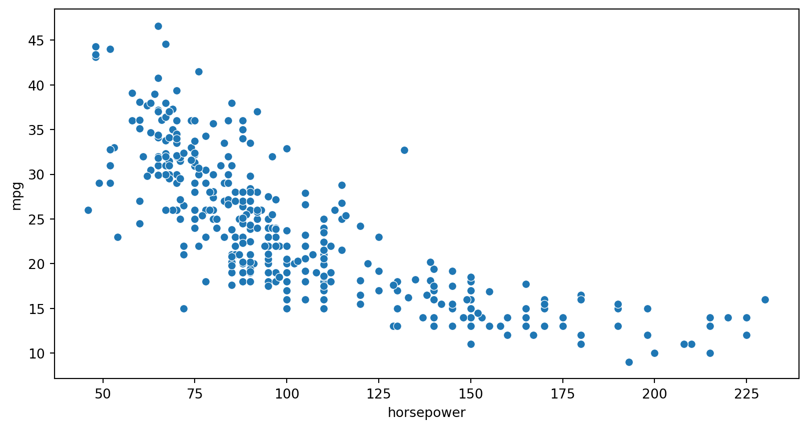

import seaborn as sns
import matplotlib.pyplot as plt
mpg = sns.load_dataset("mpg")
sns.scatterplot(data=mpg, x="horsepower", y="mpg")
plt.show()


Quarto es un sistema abierto de
publicación científica y técnica
el objetivo es hacer que el proceso de creación
y colaboración sea drásticamente mejor

 Un solo documento, múltiples formatos: HTML, PDF, presentaciones o sitios web.
Un solo documento, múltiples formatos: HTML, PDF, presentaciones o sitios web.
 Materiales más accesibles y fáciles de usar, con soporte para la enseñanza y la inclusión.
Materiales más accesibles y fáciles de usar, con soporte para la enseñanza y la inclusión.
 Fácil de aprender: usa Markdown simple y cuenta con ayudas para empezar rápido.
Fácil de aprender: usa Markdown simple y cuenta con ayudas para empezar rápido.
 Flexibilidad total: integra texto, imágenes y código en R, Python, Julia u otros lenguajes.
Flexibilidad total: integra texto, imágenes y código en R, Python, Julia u otros lenguajes.


quarto check en la terminal


Position images or other elements at precise locations


Quarto is an open system for scientific publications with markdown and interactive code (Python/R).
🔧 Need more power? Use Extensions

Compartir: De lo estático a lo interactivo; un mismo .qmd produce HTML, PDF, slides o sitios web.
Colaborar: Proyectos ordenados y control de versiones con GitHub permiten construir materiales abiertos en equipo.
Enseñar: Presentaciones reveal.js, dashboards y libros en línea integran texto, código y visualizaciones para el aula.
Reimaginar: Tecnologías como WebR, Pyodide, Shiny y Observable JS abren nuevas formas de innovar en educación.
Documentación oficial
🔗 quarto.org
Guías y ejemplos prácticos para comenzar de inmediato.

Aprendizaje en video
🔗 Crash Course en YouTube
Introducción práctica a Quarto y sus distintos usos.

Recursos de la comunidad
🔗 Mine Cetinkaya-Rundel
Cursos, libros y presentaciones en Quarto en GitHub.

Aplicaciones en educación
🔗 sethnut.com/resources
Olimpiada Matemática, Verano Matemático, EMMA y más!

🔗 Nuestro Sitio Web: seth-nut.github.io/resources